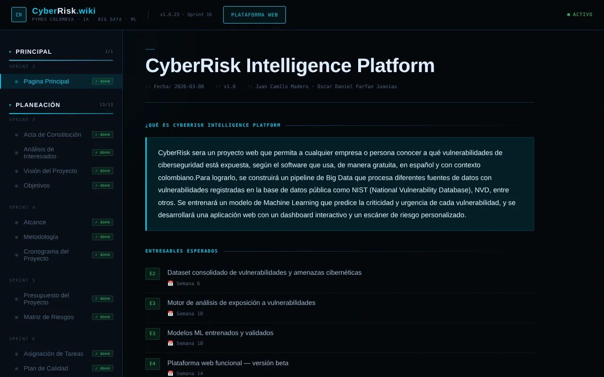

Plataforma que le dice a una PYME a qué vulnerabilidades de ciberseguridad está expuesta según el software que usa, de forma gratuita, en español y con contexto colombiano.
Las PYMEs mueven buena parte de la economía colombiana, pero rara vez tienen un área de seguridad. No saben qué tan expuestas están por el software que usan a diario, y la información pública sobre vulnerabilidades está en inglés y pensada para especialistas.

Trabajé en equipo con Juan Camilo Madero (arquitecto de datos y líder del proyecto). Fui responsable del ciclo de machine learning bajo la metodología CRISP-DM: exploración de los datos de NVD, preparación de variables, entrenamiento y validación del modelo, e integración de las predicciones con la API.
Se entregó un prototipo funcional validado con pruebas técnicas y pruebas con usuarios en entorno local: integración con fuentes CVE/NVD, motor de análisis, plataforma web, dashboard de riesgos y recomendaciones básicas. El despliegue en producción quedó como trabajo futuro, fuera del alcance académico.
La plataforma corre en entorno local, por eso aquí se muestra la wiki y el repositorio en lugar de una demo en vivo.